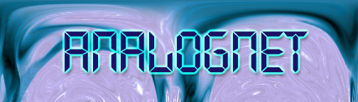

Hello one and all. I am K-Rage and with Assistance of ANALOGNET, we have hacked this site to show the security flaws in many a web server. We did this not to be cruel or harmful, but to make the fact known that not all hackers are out there to destroy and pillage. WE are out there to seek new knowledge that should rightfully be giving to us. Let the truth be known, We as hackers are a rare breed, we are the intelligent cyber warriors. We are the young, old and yet to live, do not condem us for our gift of knowledge and the ways we obtain it. It should be free for all not locked away in some "secure" computer somewhere. Now, i must say NO ONE GIVES A RATS ASS ABOUT WHAT PRESIDENT CLINTON DID OR WHO HE GAVE A BLOWJOB TOO. "Mentor's Last Words"Another one got caught today, it's all over the papers. "Teenager
Arrested in Computer Crime Scandal", "Hacker Arrested after Bank
Tampering"... Damn kids. They're all alike. But did you, in your three-
piece psychology and 1950's technobrain, ever take a look behind the
eyes of the hacker? Did you ever wonder what made him tick, what forces
shaped him, what may have molded him? I am a hacker, enter my world...
Mine is a world that begins with school... I'm smarter than most of the
other kids, this crap they teach us bores me... Damn underachiever.
They're all alike. I'm in junior high or high school. I've listened to
teachers explain for the fifteenth time how to reduce a fraction.
I understand it. "No, Ms. Smith, I didn't show my work. I did it in
my head..." Damn kid. Probably copied it. They're all alike.
I made a discovery today. I found a computer. Wait a second, this is
cool. It does what I want it to. If it makes a mistake, it's because I
screwed it up. Not because it doesn't like me... Or feels threatened by
me.. Or thinks I'm a smart ass.. Or doesn't like teaching and shouldn't be
here... Damn kid. All he does is play games. They're all alike. And then
it happened... a door opened to a world... rushing through the phone line
like heroin through an addict's veins, an electronic pulse is sent out,
a refuge from the day-to-day incompetencies is sought... a board is found.
"This is it... this is where I belong..." I know everyone here... even
if I've never met them, never talked to them, may never hear from them
again... I know you all... Damn kid. Tying up the phone line again.
They're all alike... You bet your ass we're all alike... we've been
spoon-fed baby food at school when we hungered for steak... the bits of
meat that you did let slip through were pre-chewed and tasteless.
We've been dominated by sadists, or ignored by the apathetic. The few
that had something to teach found us willing pupils, but those few are
like drops of water in the desert. This is our world now... the world of the electron and the switch, the
beauty of the baud. We make use of a service already existing without
paying for what could be dirt-cheap if it wasn't run by profiteering
gluttons, and you call us criminals. We explore... and you call us
criminals. We seek after knowledge... and you call us criminals. We
exist without skin color, without nationality, without religious bias...
and you call us criminals. You build atomic bombs, you wage wars, you
murder, cheat, and lie to us and try to make us believe it's for our
own good, yet we're the criminals.
Yes, I am a criminal. My crime is that of curiosity. My crime is
that of judging people by what they say and think, not what they look like.
My crime is that of outsmarting you, something that you will never
forgive me for. I am a hacker, and this is my manifesto. You may stop
this individual,but you can't stop us all... after all, we're all alike.
+++The Mentor+++
[May the members of the phreak community never forget his words -JR]

A SMART MAN LEARNS FROM HIS OWN MISTAKES, BUT A WISE MAN LEARNS FROM THE MISTAKES OF OTHERS.--KNYTERAGE
ROOT BY ANALOGNET
HTML AND ART DONE BY KNYTE RAGE AND KING DRAGON
QUOTES BY KNYTE RAGE AND ANALOGNET
ANALOG WOULD LIKE TO OFFER A SHOT TO "CLASSOFMYOWN" FOR ALL THE DILIGENT WORK HES DONE. I would also like to say hi to Scarius, you know who you are. I also cant forget NOCX, since his mother is an evil bitch he wasnt able to help out tonight. Next time man next time.